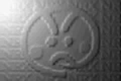
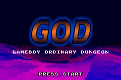
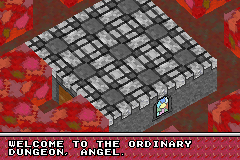
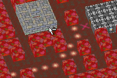

GOD
Gameboy Ordinary Dungeon




Description:
God isn't yet a game but "only" a tech demo; I focused on the engine development rather than the gameplay, the reason being that I wanted to see what are the limits of the GBA (though, I also have my own limits ;-). Eventually it will be a real-time strategy / management game, a kind of mix between Dungeon Keeper, StarTopia and Monopoly Tycoon.
Done already:
- Presentation, using bump mapping and voxel spacing,
- Main 3D graphic engine,
- Pathfinder (core of the AI),
- Support for texts and menus,
- Support for sound and music (PCM & ADPCM).
This tech demo allows the player to move around the map, and dynamically add and remove walls. The pathfinder is activated and finds the shortest path from the building in the center of the map to any of the 4 targets in the corners (the path is computed and displayed every time the map is modified).
To do:
- To allow construction of different types of building,
- To add state-driven game agents (= the characters in the game),
- To implement misc. gameplay features (give objectives, provide statistics panels, etc.).
Greetings:
I'd like to thank all my friends of Player Advance, in particular nes & Mollusk, who pushed me to work on the ADPCM, xFlasH, who gave me the "GOD" logo, and the great coders who kept me motivated (Arcadia, nagame, Yodajr, etc.).
I recommend the following web resources:
- Player Advance,
- VisualHAM,
- AFDAC,
- TONC,
- gbadev.org,
- PDroms.
Note regarding the music and sounds:
- Title screen: Korn's Good God (Rammstein Remix),
- In-game music: extracted from Dungeon Keeper 2,
- In-game sounds: extracted from Black & White.
Contacts:
Nicolas ROBERT [NRX]
- Official God thread (Player Advance forum),
- E-mail.